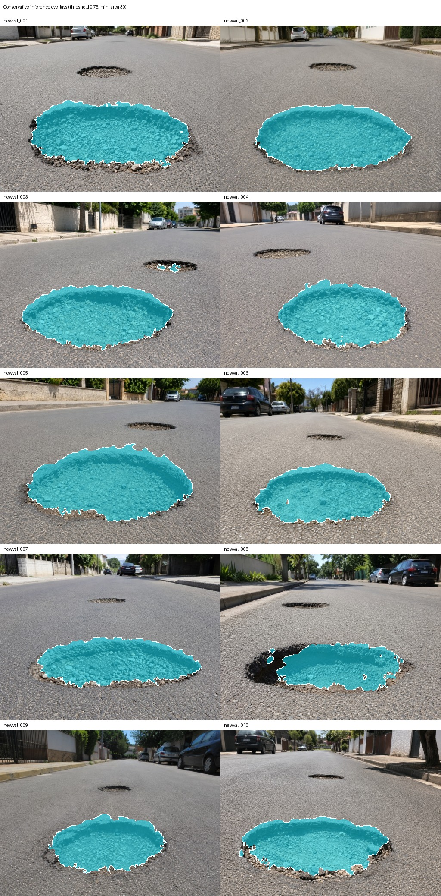

LiteRaceSegNet
道路の損傷（ポットホール）を二値マスクとして切り出す小さなCNNです。フルモデルのパラメータ数は約0.125Mです。この大きさのモデルで、小さな損傷領域とその縁をどこまで残せるかを確かめたくて作りました。
モデル
コード：seg/core/lightweight_race.py
| 段 | 構成 | チャネル | 解像度 |
|---|---|---|---|
| stem | 3×3 conv（stride 2）+ depthwise separable conv | 24 | 1/2 |
| detail | LiteIRBlock × 2 | 24 | 1/2 |
| down1 | LiteIRBlock × 2（stride 2） | 48 | 1/4 |
| down2 | LiteIRBlock × 2（stride 2） | 96 | 1/8 |
| context | LiteASPP（dilation 1, 2, 4 + global pooling） | 96 | 1/8 |
| boundary head | detailとcontextの特徴からエッジのロジットを予測 | 1 | 1/2 |
| fuse | detail・context・エッジのロジットを連結して融合 | 96 | 1/2 |
| head | 1×1 convのあと入力サイズにアップサンプル | 2 | 1 |
| aux head | down1の出力に1×1 conv（学習時のみ） | 2 | 1 |
LiteIRBlockは、MobileNetV2/V3のinverted residualブロックをこのプロジェクト向けに簡略化して実装したものです。
boundary headは、detailの特徴とアップサンプルしたcontextの特徴からエッジのロジットを予測します。detailの特徴には1 + sigmoid(edge)を掛け（boundary gate）、エッジのロジットは1チャネルとして最後の融合に一緒に渡します（boundary-logit fusion）。
学習設定
| 入力サイズ | 256 × 384 |
|---|---|
| バッチ / エポック | 4 / 最大60、patience 12で早期終了 |
| 最適化 | AdamW、lr 3.2e-4、weight decay 2e-4、polyスケジュール |
| 損失 | CE 1.0 + Dice 0.35 + 補助 0.2 + 境界 0.1 |
| データ | 学習2,400ペア、検証10ペア、テスト10枚 |
| 環境 | AWSのGPUインスタンス、AMP、seed 42 |
設定ファイル：seg/config/v13_ablation/v13_full_reference.yaml
結果
数値はすべてfinal_evidence/のものです。学習は変種ごとに1回です。
アブレーション（検証10枚）
| 変種 | mIoU | 損傷IoU | Δ mIoU | パラメータ (M) | レイテンシ (ms) | best epoch |
|---|---|---|---|---|---|---|
| フルモデル | 0.8072 | 0.7113 | — | 0.1245 | 3.10 | 2 |
| detailブランチなし | 0.7982 | 0.6984 | −0.0090 | 0.1245 | 2.67 | 2 |
| boundary gateなし | 0.8010 | 0.7023 | −0.0063 | 0.1245 | 3.05 | 2 |
| boundary-logit fusionなし | 0.8046 | 0.7078 | −0.0026 | 0.1245 | 3.11 | 2 |
| LiteASPPをDSConv 2層に置き換え | 0.7850 | 0.6784 | −0.0222 | 0.1235 | 2.76 | 2 |
| 補助ヘッド・補助損失なし | 0.7919 | 0.6866 | −0.0153 | 0.1244 | 3.03 | 11 |
| スリムなバックボーン（チャネル16 / 64） | 0.8064 | 0.7095 | −0.0008 | 0.0594 | 3.12 | 20 |
レイテンシはCUDA、入力256×384、1枚あたりの値です。検証時のしきい値は0.60です。
検証画像が10枚で、変種ごとに1回しか学習していないので、boundary-logit fusionの0.003のような小さな差を実際の効果と見ることはできません。大きく下がったのはLiteASPPと補助損失を外したときです。スリムなバックボーンはパラメータが半分以下ですが、mIoUはほぼ同じです。
しきい値（検証10枚）
| しきい値 | 最小面積 | mIoU | 損傷IoU | Precision | Recall |
|---|---|---|---|---|---|
| 0.60 | 120px | 0.8073 | 0.7113 | 0.918 | 0.759 |
| 0.75 | 30px | 0.8006 | 0.6984 | 0.951 | 0.724 |
定量比較には0.60を、テストの推論と下の図には0.75を使いました。
テスト（10枚、しきい値0.75）
| 損傷IoU | Dice | Precision | Recall | 境界F1 |
|---|---|---|---|---|
| 0.662 | 0.795 | 0.963 | 0.681 | 0.058 |
境界付近のパッチ
正解マスクの境界ピクセルの位置から32×32と64×64のパッチを1,280枚ずつ切り出し、同じ指標を計算し直しました。
| パッチ | IoU | Dice | Precision | Recall |
|---|---|---|---|---|
| 32×32 | 0.231 | 0.375 | 0.795 | 0.245 |
| 64×64 | 0.341 | 0.508 | 0.901 | 0.354 |
| 全2,560枚 | 0.321 | 0.486 | 0.886 | 0.335 |
損傷の領域は見つけられていますが、縁はかなり取りこぼしています。
比較用のベースラインとして、SegFormer-B3の学習スクリプトをseg/transformer_b3/に入れてあります。その結果はこのリポジトリには記録していません。
推論結果

境界線だけを描いた版 · 要約カード · 生のマスクと後処理後のマスク


要約カードは、seg/infer_service_visual.pyがマスクから損傷面積の割合と領域の数を計算して作ったものです。
実行
pip install -r requirements.txt python scripts/smoke_check_literace.py # モデルを作って順伝播を1回実行 python seg/train_literace.py --config seg/config/pothole_binary_literace_train.yaml bash scripts/run_v13_ablation_matrix.sh # 7つの変種を学習して要約を出力
学習には、datasets/pothole_binary/README_DATASET_LAYOUT.mdのとおりに配置した画像とマスクのペアが必要です。ルートの.batファイルは同じ手順をWindowsで実行します。
構成
seg/core/ モデル、データ読み込み、学習ユーティリティ seg/config/ 学習設定。v13_ablation/に7つの変種 seg/tools/ プロファイル、アブレーションの要約、境界指標 scripts/ スモークチェック、アブレーションと結果生成のパイプライン final_evidence/ 記録した結果：アブレーション、しきい値、テスト推論、指標、ケース分類 index.html, ko/, en/ このページ
ライセンス
オープンソースのライセンスではありません。コードと文書は閲覧と学術的な参照のためにだけ公開しています。条件はLICENSEにあります。データセット、チェックポイント、学習済みの重みは含めていません。サードパーティのコンポーネントはそれぞれのライセンスに従います（THIRD_PARTY_NOTICES.md）。